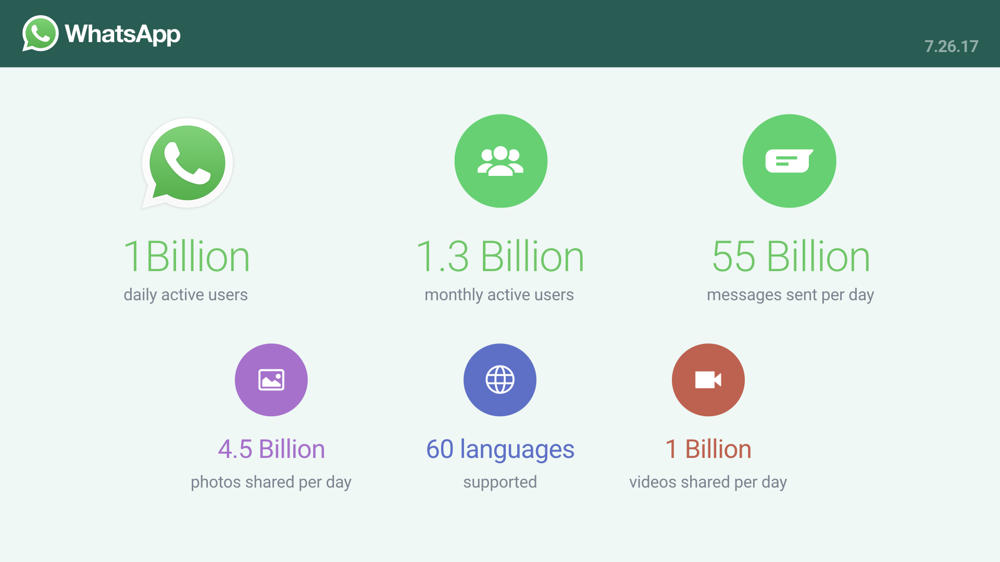

WhatsApp Blog
We built WhatsApp as a private messaging app - a simple, secure, and reliable way to communicate with friends and family. And as we've added new features, we've been careful to try and keep that feeling of intimacy, which people say they love.
A few years back we added a feature to WhatsApp that lets you forward a message to multiple chats at once.
Today, we're launching a test to limit forwarding that will apply to everyone using WhatsApp. In India - where people forward more messages, photos, and videos than any other country in the world - we'll also test a lower limit of 5 chats at once and we'll remove the quick forward button next to media messages.
We believe that these changes - which we'll continue to evaluate - will help keep WhatsApp the way it was designed to be: a private messaging app.
We are deeply committed to your safety and privacy which is why WhatsApp is end-to-end encrypted, and we'll continue to improve our app with features like this one. For more information, please visit our WhatsApp Safety Tips page.
Starting today, WhatsApp will indicate which messages you receive have been forwarded to you. This extra context will help make one-on-one and group chats easier to follow. It also helps you determine if your friend or relative wrote the message they sent or if it originally came from someone else. To see this new forwarded label, you need to have the latest supported version of WhatsApp on your phone.
WhatsApp cares deeply about your safety. We encourage you to think before sharing messages that were forwarded. As a reminder, you can report spam or block a contact in one tap and can always reach out to WhatsApp directly for help. For more information, please visit our WhatsApp Safety Tips page.
Over the last few months, we've added new features that improve the groups experience. Some of these include group descriptions, a catch up feature, and protection for people who are being added repeatedly to groups they've left.
Today, we're launching a new group setting where only admins are able to send messages to a group. One way people use groups is to receive important announcements and information, including parents and teachers at schools, community centers, and non-profit organizations. We've introduced this new setting so admins can have better tools for these use cases.
To enable this setting, open “Group Info,” tap Group Settings > Send Messages and select “Only Admins.” This setting is rolling out to all users around the world on the latest supported versions of the app.
Groups have been an important part of the WhatsApp experience, whether it's family members connecting across the globe or childhood friends staying in touch over the years. There are also people coming together in groups on WhatsApp like new parents looking for support, students organizing study sessions, and even city leaders coordinating relief efforts after natural disasters. Today, we're sharing improvements that we've made to groups.
What's New
- Group description: A short blurb found under group info that allows you to set the purpose, guidelines, or topics for the group. When a new person joins a group, the description will show up at the top of the chat.
- Admin controls: In group settings, there's now a control that allows admins to restrict who can change the group's subject, icon, and description.
- Group catch up: When you've been away from a group chat, quickly catch up on messages that mention or reply to you by tapping on a new @ button that appears at the bottom right corner of the chat.
- Participant search: Find anyone in a group by searching for participants on the group info page.
- Admins can now remove admin permissions of other group participants, and group creators can no longer be removed from the group they started.
We've also introduced protection so users can't be repeatedly added to groups they've left. These features are available for Android and iPhone users today. We hope you enjoy these new updates!
Next month, the European Union is updating its privacy laws to require greater transparency for how people's information is used online. WhatsApp is updating our Terms of Service and Privacy Policy where the law known as the General Data Protection Regulation (GDPR) is taking effect.
We are not asking for new rights to collect personal information with this update. Our goal is simply to explain how we use and protect the limited information we have about you. There are a few things we want to highlight:
- WhatsApp in Europe: WhatsApp has established an entity within the European Union to provide your services there and to meet the new high standards of transparency for how we protect the privacy of our users.
- Data sharing: We are not currently sharing account information to improve your product and ads experience on Facebook. As we have said in the past, we want to work closer with other Facebook companies in the future and we will keep you updated as we develop our plans.
- Staying safe on WhatsApp: When we receive reports of a bad actor sending unwanted messages - like SPAM or abusive content - on either WhatsApp or Facebook, we share information and can take action including blocking them across both services. You can learn more about how to stay safe on WhatsApp by reviewing these safety tips.
WhatsApp cares deeply about your privacy and security. Every message and call is secured by end-to-end encryption so that no one, not even WhatsApp, can read or listen to your conversations. In the coming weeks, you will be able to download and see the limited data that we collect. This feature will be rolling out to all users around the world on the newest version of the app. To learn more, click here.
We welcome your feedback and we thank you for using WhatsApp!
People all around the world use WhatsApp to connect with small businesses they care about — from online clothing companies in India to auto parts stores in Brazil. But WhatsApp was built for people and we want to improve the business experience. For example, by making it easier for businesses to respond to customers, separating customer and personal messages, and creating an official presence.
So today we're launching WhatsApp Business — a free-to-download Android app for small businesses. Our new app will make it easier for companies to connect with customers, and more convenient for our 1.3 billion users to chat with businesses that matter to them. Here's how:
- Business Profiles: Help customers with useful information such as a business description, email or store addresses, and website.
- Messaging Tools: Save time with smart messaging tools — quick replies that provide fast answers to frequently asked questions, greeting messages that introduce customers to your business, and away messages that let them know you're busy.
- Messaging Statistics: Review simple metrics like the number of messages read to see what's working.
- WhatsApp Web: Send and receive messages with WhatsApp Business on your desktop.
- Account Type: People will know that they're talking to a business because you will be listed as a Business Account. Over time, some businesses will have Confirmed Accounts once it’s been confirmed that the account phone number matches the business phone number.
People can continue using WhatsApp as usual — there's no need to download anything new. And people will continue to have full control over the messages they receive, with the ability to block any number, including businesses, as well as report spam.
Over 80% of small businesses in India and Brazil say WhatsApp helps them both communicate with customers and grow their business today (Source: Morning Consult study). And WhatsApp Business will make it easier for people to connect with them, and vice versa, in a fast and simple way.
WhatsApp Business is available today and free to download on Google Play in Indonesia, Italy, Mexico, the U.K. and the U.S. The app is rolling out around the world in the coming weeks. This is just the beginning!
Starting today you can now delete messages you sent by mistake — whether to one person or an entire group. Here's how it works: tap and hold on the message, choose "Delete," and then "Delete for everyone." You have seven minutes to delete the message after it's sent.
This feature is rolling out for users around the world on the latest versions of iPhone, Android, Windows Phone as well as desktop. Both you and the message recipient must be using the latest version of WhatsApp for the message to be successfully deleted.
You can learn more in our FAQs for Android, iPhone, and Windows Phone.
Today, we’re rolling out a new feature that allows you to share your location in real-time with family or friends. Whether you're meeting up with friends, letting loved ones know you're safe, or sharing your commute, Live Location is a simple and secure way to let people know where you are. This end-to-end encrypted feature lets you control who you share with and for how long. You can choose to stop sharing at any time or let the Live Location timer simply expire.
Here's how it works. Open a chat with the person or group you want to share with. Under "Location" in the attach button, there's a new option to "Share Live Location." Choose for how long you want to share and tap send. Each person in the chat will be able to see your real-time location on a map. And if more than one person shares their Live Location in the group, all locations will be visible on the same map.
Live Location is available on both Android and iPhone and will be rolling out in the app in the coming weeks. We hope you like it.

Over 1 billion people use WhatsApp every day to stay connected with their family and friends, and over time, more people are using the app to communicate with businesses they care about too. In fact, many connections are already taking place every day, whether it's someone placing an order with a local bakery or looking at new styles from a clothing store. But the way this happens now on WhatsApp is pretty rudimentary. We've heard stories of shopkeepers who use WhatsApp to stay in touch with hundreds of customers from a single smartphone, and from people who are unsure about whether or not a business on WhatsApp is authentic. In the coming months, we'll be testing new features that aim to solve some of these challenges, and make it easier for people to communicate with the businesses they want to reach on WhatsApp. Our approach is simple – we want to apply what we've learned helping people connect with each other to helping people connect with businesses that are important to them.
We know businesses have many different needs. For example, they want an official presence – a verified profile so people can identify a business from another person – and an easier way to respond to messages. We're building and testing new tools via a free WhatsApp Business app for small companies and an enterprise solution for bigger companies operating at a large scale with a global base of customers, like airlines, e-commerce sites, and banks. These businesses will be able to use our solutions to provide customers with useful notifications like flight times, delivery confirmations, and other updates.
Whether someone is communicating with a business around the corner or around the globe, people expect WhatsApp to be fast, reliable, and secure. We'll be listening carefully to feedback during our test phase and keeping people informed as we make these tools more widely available. It's important that we get this right and are thoughtful about the new experiences we'll provide for businesses and our users. For more information, please read this FAQ.
Just last year, we shared that one billion people around the world use WhatsApp every month. Today, we are excited and proud to share that one billion people around the world use WhatsApp every day to stay in touch with their family and friends.
Whether it’s sharing personalized photos and videos, connecting through video calling, or keeping friends updated throughout the day with Status, communicating on WhatsApp has never been easier or more personal. We are humbled that so many people are using these new features to connect with one another in their own special way.
As we celebrate this milestone, we’re committed more than ever to bringing you more useful features to enjoy, while delivering the reliability, simplicity, and security you expect with WhatsApp. Thank you for your continued support.
